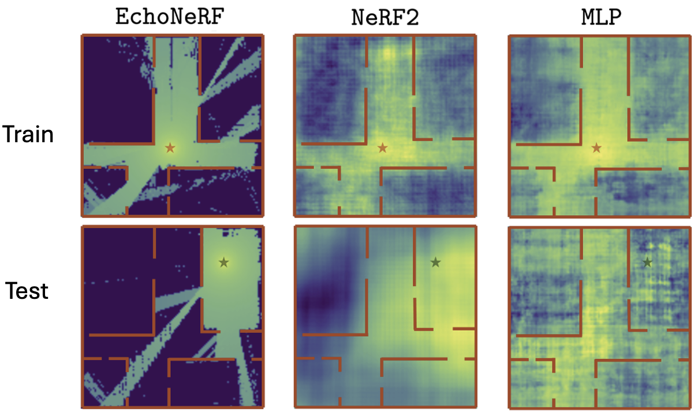
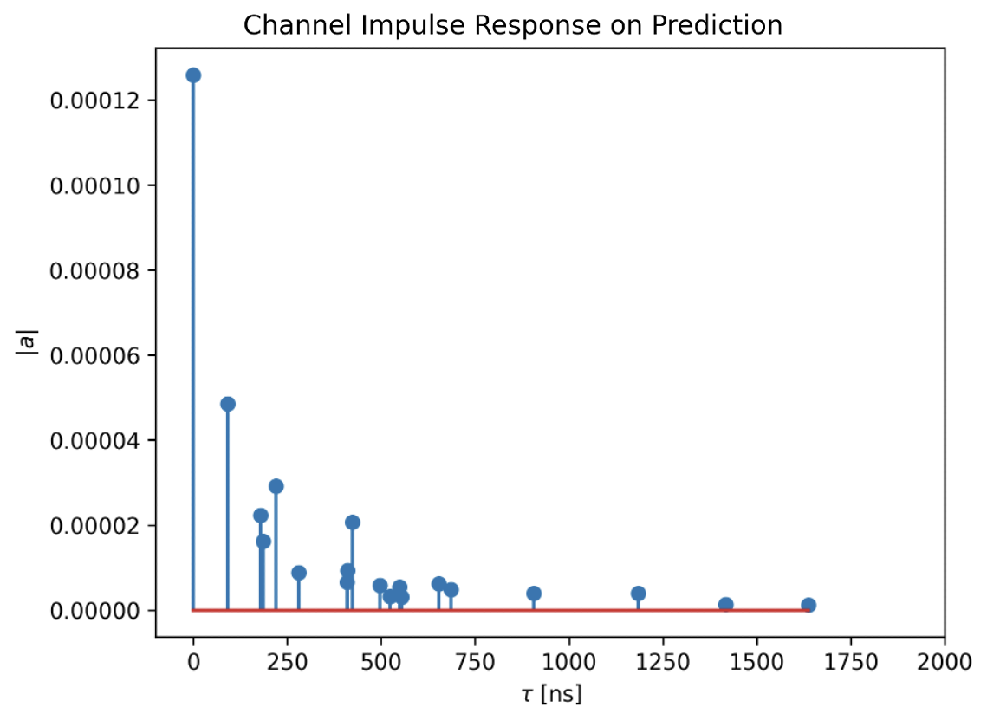
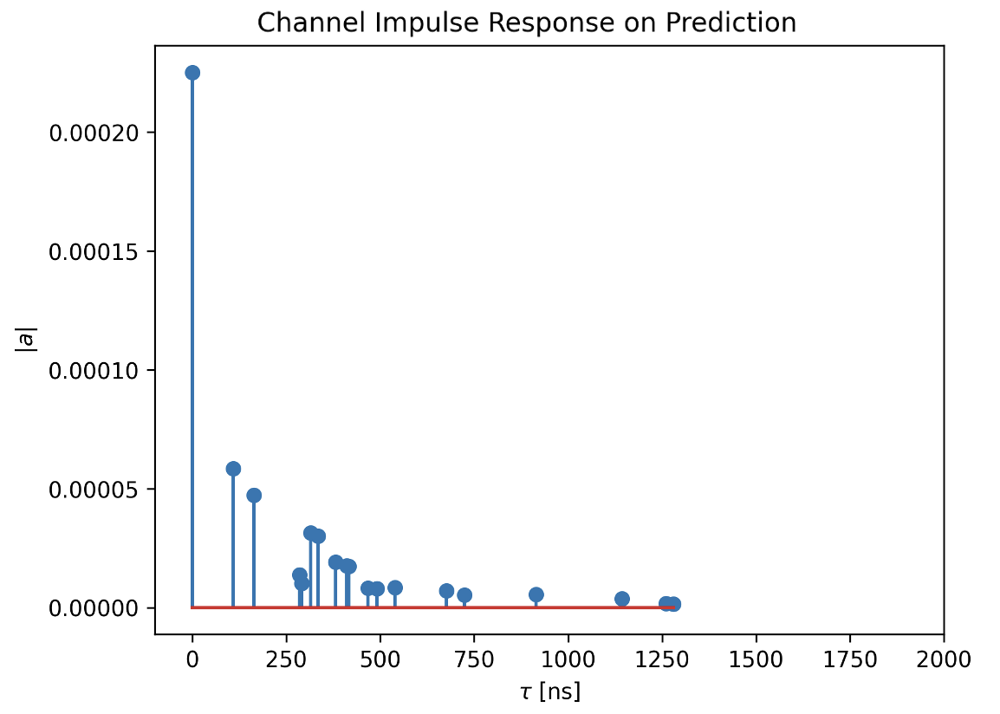
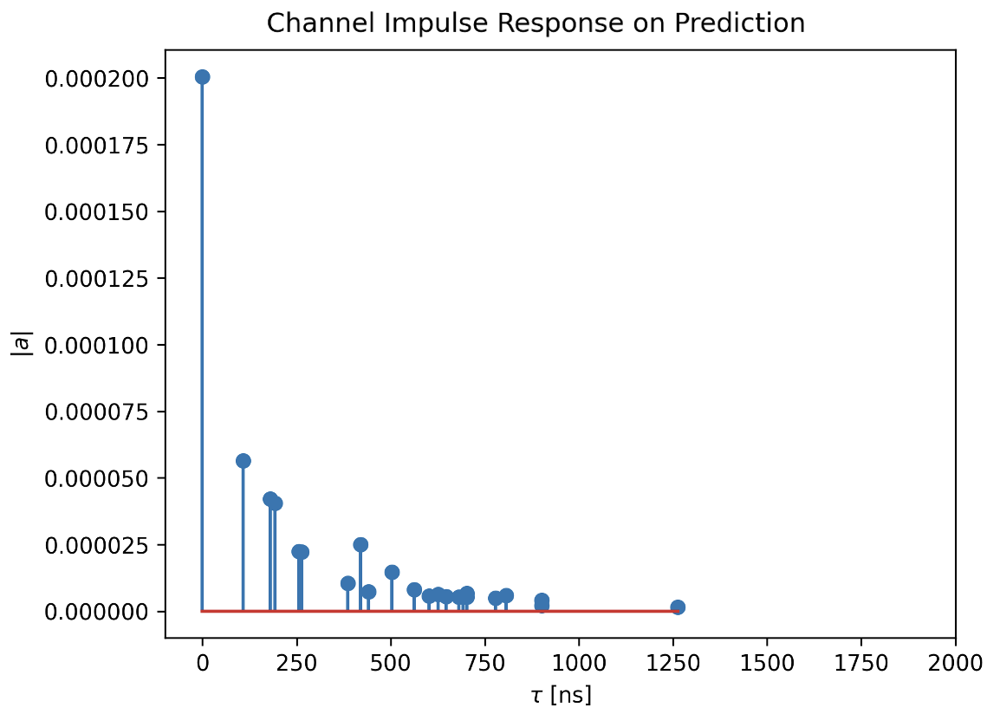
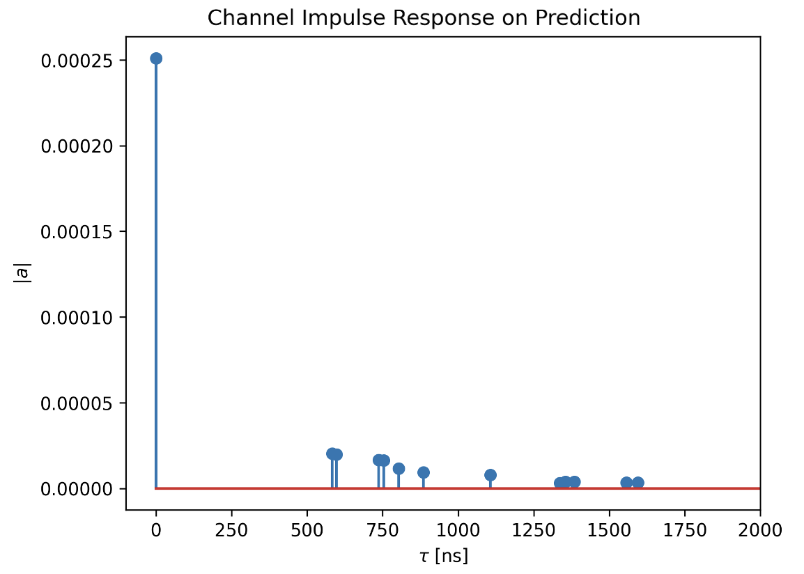

Because EchoNeRF solves the inverse problem, it allows for several downstream tasks:
- Signal Power (RSSI) Prediction: We use the EchoNeRF's signal model to predict the RSSI at uniform grid locations across the predicted floorplan. We do this for the transmitters (Tx) used during training (red star) as well as for new, unseen Tx locations (green star). Observe that baselines overfit to the training Tx locations and fail to generalize to new Tx locations. EchoNeRF, on the other hand, generalizes well to unseen Tx locations. 
- Channel Impulse Response (CIR) Prediction: We randomly select a Tx-Rx pair inside the predicted floorplan and generate the CIRs using the NVIDIA's Sionna Simulator [5].
- Basic Ray tracing: We also show the ray tracing results by generating higher order reflections (until order 3) using Sionna on the predicted floorplans. Tx and Rx are shown in the image as red and green stars, respectively.



